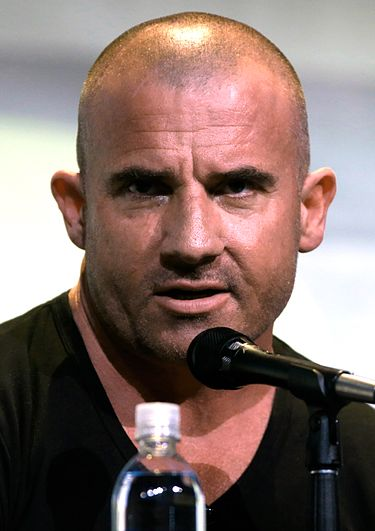

בורוז מואשם ברצח של טרנס סטדמן, אחיה של סגנית נשיא ארצות הברית.
בעזרת ראיות שפוברקו ושונו על ידי סוכני "החברה",
מורשע לינקולן ברצח בכוונה תחילה ונגזר עליו עונש מוות,
כאשר ההוצאה להורג מתוכננת להתבצע תוך מספר חודשים בכיסא חשמלי.
למרות הרשעתו מתעקש לינקולן שהוא חף מפשע, ושהוא הופלל.
אחיו של לינקולן, מייקל סקופילד, מאמין לו ומתכוון לעשות כל שביכולתו כדי לעזור לו.
מייקל מבצע שוד מזוין שעונשו מאסר בפועל ונכנס לכלא פוקס ריבר, היכן שכלוא אחיו, כדי לסייע לו לברוח.
דומיניק הוקון מירטוודט פרסל, נולד ב-17 בפברואר 1970, הוא שחקן אוסטרלי
יליד בריטניה.
ידוע בשל תפקידיו בסדרות נמלטים ואגדות המחר בתור גל חום.
לעמוד השחקן ב-IMDB